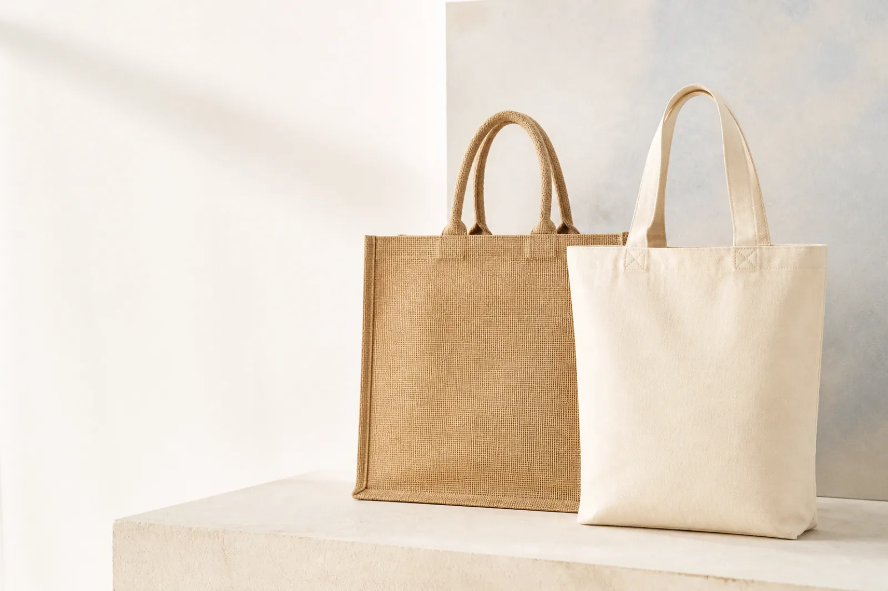

Material
Fibre, weave, weight, colour and certification route.
Specify materials, dimensions, handles, finishing and branding to create a bag that fits your customer, campaign or retail range.

Jute bags offer structure and durability for repeated use, with a tactile appearance suited to retail and promotional applications.
MOQ, lead time and available certifications depend on specification and manufacturing route. We confirm these transparently with every quotation.
Request jute bag quoteFrom lightweight promotional totes to premium heavyweight shoppers, cotton provides broad design flexibility and a familiar reusable format.
Certification and claim requirements should be defined at enquiry stage so the appropriate material and documentation route can be selected.
Request cotton bag quoteFibre, weave, weight, colour and certification route.
Size, gussets, handles, closures, pockets and reinforcement.
Print method, colour coverage, embroidery, labels and trims.
Bulk, individual, retail-ready and carton requirements.
Tell us what you want to evaluate and the likely order volume. We will recommend the most relevant sample route.